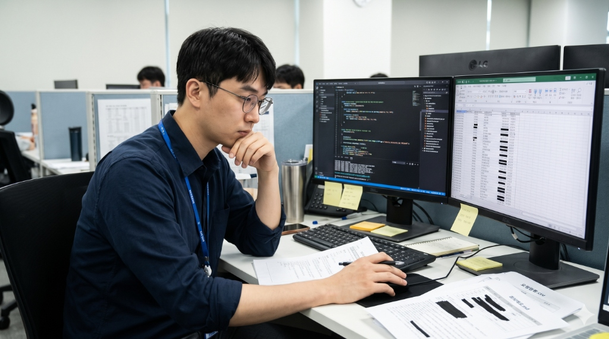

박지훈 31세 · 가상 페르소나
B2B SaaS 백엔드 개발자 4년 차 · 고객 장애 대응 담당
외부 API 공급사·오픈소스에 오류를 자주 문의
“보내자니 정보가 새고, 지우자니 설명이 안 돼요.”
겪는 문제
- 시간 낭비: 민감 값을 찾아 지우고 다시 씀
- 판단 부담: 어디까지 지울지 매번 고민
- 재작성·반복: 단서가 빠져 되묻고 비슷한 문의도 다시 준비
도입 조건
- 로그에 고객·거래 정보가 섞임
- 회사가 외부 AI 입력을 제한
- 사내 또는 승인된 LLM 사용 가능
- 도입 결정: 개발팀장·보안 담당